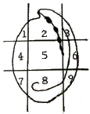
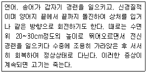
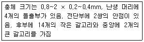

수산양식기사 (2019-08-04 기출문제)
1과목: 어류양식학
1. 수산동물 중 미국에서 최초로 생명물질 특허가 취득된 종은?
- 참굴
- 틸라피아
- 채널메기
- 무지개송어
(정답률: 75%)

2. 종묘의 운반 시 냉각 마취 운반법이 많이 쓰이는 어류는?
- 잉어
- 뱀장어
- 초어
- 송어
(정답률: 92%)
3. 은어의 종묘 생산 시 주된 먹이로 이용되는 것은?
- Monochrysis sp.
- Navicula sp.
- Chlorella sp.
- Brachionus sp.
(정답률: 77%)
4. 교미에 의해서 체내 수정이 이루어지는 어종은?
- 넙치
- 조피볼락
- 돌돔
- 능성어
(정답률: 89%)
5. 다음 중 넙치의 성장 적수온으로 가장 적합한 것은?
- 8~10℃
- 10~15℃
- 18~23℃
- 26~30℃
(정답률: 76%)
6. 다음 중 잉어가 사료를 가장 많이 먹는 수온은?
- 10~15℃
- 20~23℃
- 24~28℃
- 30~33℃
(정답률: 83%)
7. 냉동 생사료 선도의 육안적 식별법에 대한 설명이 틀린 항목은?
- 냉동어의 체표가 살짝 건조되고 옅은 황색을 띠는 것을 선택한다.
- 냉동어의 중심부에 붉은색이 있으면 선도를 의심할 필요가 있다.
- 냉동어에서 불쾌한 냄새가 나며 손가락으로 냉동어를 살짝 눌러 물이 스며나오는 것은 피한다.
- 냉동어의 해동 시 육질이 탄력이 있는 것을 선택한다.
(정답률: 80%)
8. 평균 체중이 100g 되는 어류 종묘 10000마리에 펠렛 사료 6000kg을 공급하여 100% 생존하였으며, 평균 600g의 어류를 수확하였다면 이때의 사료계수는?
- 0.9
- 1.2
- 1.8
- 2.4
(정답률: 89%)
9. 우리나라산 뱀장어 (Anguilla japonica )에 비해 유럽산 뱀장어(Anguilla anguilla )의 특징으로 옳지 않은 것은?
- 유럽산 뱀장어가 기생충에 잘 감염되며 폐사율이 높다.
- 같은 연력에서 보면 체장이 우리나라산 뱀장어 보다 짧다.
- 공식에 의한 소모가 우리나라산 뱀장어보다 많다.
- 고수온에서 우리나라산 뱀장어보다 성장이 좋고 발병률이 낮다.
(정답률: 67%)
10. 참돔 종묘생산에 대한 설명으로 옳은 것은?
- 참돔의 주 산란시기는 7~9월이다.
- 성숙한 수컷은 머리가 둥글다.
- 알에서 갓 부화한 자어는 운동력과 시각을 가진다.
- 알의 비중은 1.0245 정도로 해수 비중을 그 이상으로 유지한다.
(정답률: 67%)
11. 방류재포양식에 관한 설명으로 틀린 것은?
- 연어의 어린 종묘를 생산하여 방류 후 회귀한 것을 포획 하였다.
- 전복 종묘를 연안 암반지대에 방류하여 성장 후 포획하였다.
- 방류재포양식은 대개 방류자가 수확하여 처분할 수 있는 권리를 가진다.
- 방류재포양식에서는 우수 종묘 확보를 위한 친어 육종 시설이 필수적이다.
(정답률: 68%)
12. 사료의 첨가물 중 연어, 송어류의 체색이나 육질의 색을 좋게 하기 위해 사용되는 착색제는?
- CMC
- α-토코페롤
- 새우가루
- 글리신
(정답률: 89%)
13. 무지개송어의 알을 수온 10℃ 전후에서 부화시킬 때 발안기가 되는 시기는 수정 후 며칠 정도인가?
- 4일 이후
- 8일 이후
- 12일 이후
- 16일 이후
(정답률: 65%)
14. 유수식으로 넙치 알을 부화시킬 때 난의 적정 밀도는? (단, 수조의 깊이 40cm 이상, 에어레이션을 함)
- 1~2개/mL
- 5~10개/mL
- 20~50개/mL
- 50~100개/mL
(정답률: 69%)
15. 송어양식을 할 수 있는 용수(담수)의 최저 용존 산소량은?
- 15mg/L
- 11mg/L
- 7mg/L
- 5mg/L
(정답률: 85%)
16. 방어 양식에서 좋은 종묘를 구할 때, 유의할 점이 아닌것은?
- 겉보기에 둥글둥글하게 살이 쪄 있는 것이어야 한다.
- 몸 빛깔은 청록색을 띠고 있는 것이어야 한다.
- 사육 가두리 내에서 다른 개체와 떼를 지어서 정상적인 유영을 하고 있는 것이어야 한다.
- 어체의 크기가 고른 것이어야 한다.
(정답률: 90%)
17. 수온 15~17℃ 일 때 자주복 알의 부화일수는?
- 약 3일
- 약 5일
- 약 10일
- 약 15일
(정답률: 62%)
18. 채넬메기의 산란기 성징에 대한 설명으로 옳지 않은 것은?
- 암컷의 복부는 불룩하여 표면이 거칠다.
- 암컷의 생식공 부위가 붉게 부어오른다.
- 수컷의 두부 머리 폭이 몸통 부분보다 넓어진다.
- 수컷의 생식공이 크게 돌출한다.
(정답률: 72%)
19. 암수의 성장차이가 나는 양식 어류와 수컷의 성장이 크고 빠른 것은?
- 메기류
- 넙치
- 틸라피아
- 농어
(정답률: 88%)
20. 조피볼락에 대한 설명으로 거리가 먼 것은?
- 우리나라에서 육상수조양식 생산량이 제일 많은 어종이다.
- 활동성이 적은 정착성 어류이다.
- 3~4월에 알이 수정된다.
- 5월경에 새끼를 출산한다.
(정답률: 69%)
2과목: 무척추동물양식학
21. 보리새우 양식에 있어서 Zoea기의 먹이로 적합하지 않는 것은?
- Skeletonema sp.
- 부유성 규조류
- 참굴의 알 및 유생
- Rotifer
(정답률: 60%)
22. 전복의 상처 위치를 표시한 아래 그림에서 가장 폐사율이 큰 부위로 묶어진 것은?

- 1, 2, 6, 9
- 2, 3, 4, 6
- 2, 6, 7, 9
- 2, 5, 7, 8
(정답률: 80%)
23. 참전복의 종묘생산 시 폐사율이 가장 높은 시기는?
- 저서후기
- 트로코포라 유생기
- 제1호흡공이 생기기 직전
- 각장 3~4mm 정도의 해조류 섭식시기
(정답률: 80%)
24. 진주조개의 생존하한 수온으로 맞는 것은?
- 6℃
- 8℃
- 10℃
- 12℃
(정답률: 74%)
25. 진주조개 양성장 중 화장 어장이라고 하는 것은?
- 채묘가 잘 되는 어장
- 진주의 빛깔이나 광택이 우수해지는 어장
- 폐사가 심하게 일어나는 어장
- 겨울철 월동이 가능한 어장
(정답률: 84%)
26. 생식소 절개 방법으로 수정이 가능한 조개들로 짝지어진것은?
- 담치, 진주조개
- 가리비, 피조개
- 대합, 왕우럭
- 참굴, 개량조개
(정답률: 50%)
27. 까막전복(둥근전복)의 완숙에 필요한 적산수온은?
- 5500℃
- 3500℃
- 2500℃
- 1500℃
(정답률: 80%)
28. 부착 직후의 참굴과 따개비의 식별 기준으로 가장 올바른 것은?
- 모양과 색깔
- 크기와 시기
- 수층과 군집성
- 수역과 주광성
(정답률: 70%)
29. 전복류의 저서생활 초기에 맞지 않는 먹이는?
- Amphora sp.
- Cocconeis sp.
- Chlorella sp.
- Navicula sp.
(정답률: 67%)
30. 대하양식에 있어서 광합성 세균(PSB)의 효능으로 적절하지 못한 것은?
- 수질의 정화 및 안정
- 수중의 암모니아 제거
- 내병성 강화
- 저질 개선
(정답률: 60%)
31. 수하식 양석법의 설명이 아닌 것은?
- 먹이 섭취 시간을 늘려 성장을 촉진한다.
- 성장이 비교적 균일하고 저질이 매몰되지 않는다.
- 해면을 입체적으로 이용할 수 있다.
- 타 양성법과 비교하여 시설비가 적게 들고 수확성이 높다.
(정답률: 68%)
32. 우렁쉥이(멍게)의 산란 성기 적수온은?
- 18~22℃
- 13~17℃
- 8~12℃
- 3~7℃
(정답률: 39%)
33. 키조개 종묘의 방양에 관한 내용으로 옳은 것은?
- 조간대에 방양한다.
- 종묘는 그 크기가 각장 2~3mm 되는 것이 알맞다.
- 방양 시기는 9~10월 사이가 적당하다.
- 방양 시에는 종묘 하나하나를 모심기하는 것과 같이 심는다.
(정답률: 80%)
34. 우리나라에서 진주조개의 피한장과 양성장이 반드시 필요한 주 이유는?
- 폐사를 방지하고 성장을 촉진하기 위해
- 양식장을 넓게 활용할 필요가 있기 때문에
- 수확 장소와 양성장이 각각 다르기 때문에
- 수산업법에 규정되어 있기 때문에
(정답률: 80%)
35. 보리새우의 Nauplius기 유생의 영양섭취 방법은?
- 자체 내의 난황으로 성장한다.
- 부유 규조류 등 미세 plankton을 섭취한다.
- Brine shrimp의 Nauplius를 섭취한다.
- 바지락 등 패류를 잘게 썰어준 것을 섭취한다.
(정답률: 73%)
36. 바지락 치패의 방양 방법 중 석시법에 대한 설명으로 옳은 것은?
- 배를 타고 먼바다로 나가 방양하는 방법
- 바닥에 모심기를 하듯이 꼽아 방양하는 방법
- 만조의 정조 때 배를 이용하여 방양하는 방법
- 간출된 다음 종묘를 방양하는 방법
(정답률: 64%)
37. 양성용 종굴로서 가장 알맞은 크기는?
- 1~2mm
- 3~18mm
- 20~35mm
- 43~58mm
(정답률: 57%)
38. 개량조개의 종묘 방양시 주의할 점으로 올바른 것은?
- 양성장은 육수의 영향을 많이 받는 곳으로 한다.
- 방양을 위한 수송 시 공기 노출에 주의해야한다.
- 장기간 수송 시에는 2년 이상의 소형이 알맞다
- 방양시기는 한겨울이나 여름이 좋다.
(정답률: 68%)
39. 다음 중 조용한 내만에서 수하식으로 가리비 양식을 할경우 일반적으로 성장이 가장 빠른 방식은?
- 채롱식
- 귀매달기식
- 편평칸막이식
- 원통칸막이식
(정답률: 78%)
40. 참가리비의 산란 수온은?
- 5~6℃
- 8~9℃
- 14~16℃
- 21~23℃
(정답률: 51%)
3과목: 해조류양식학
41. 김의 퇴색현상에 가장 크게 영향을 미치는 색소는?
- 클로로필 a, b
- 카로티노이드와 클로로필 b
- 클로로필 a와 피코에리드린
- 피코에리드린과 피코시아닌
(정답률: 68%)
42. 김 양식장에서 참김과 방사무늬김 사이에 자리바꿈이 일어나는 주된 원인은?
- 병해에 대한 저항성의 차이
- 환경에 대한 적응력의 차이
- 영양번식성의 차이
- 양식 기간의 차이
(정답률: 81%)
43. 3월 이후 냉장발을 사용하여 양식기간을 연장하기 위한 방법으로 가장 적합한 것은?
- 발의 노출 시간을 길게 한다.
- 발의 노출 시간을 단축한다.
- 발을 수면에 부동한다.
- 발의 수광량을 많이 해준다.
(정답률: 57%)
44. 김의 수조 채묘시 고려할 사항이 아닌 것은?
- 각포자의 방출량이나 방출 일자의 조절 여부
- 방출된 각포자가 빠른 시간 내에 고르게 부착되는가의 여부
- 해수 유동과 온도의 변화 여부
- 부착된 각포자의 발아 관리가 용이한가 여부
(정답률: 64%)
45. 김 양식어장의 파래 구제법은?
- 채묘 초기에 발을 1시간 정도의 고노출선에 며칠간 매어 둔다.
- 파래가 5~6cm 정도 자랐을 대에는 발을 육상으로 올려서 3~4시간 건조한다.
- 바람이 있고 습기가 적은날 건조처리를 실시한다.
- 발을 건조 처리 후에 노출 상태로 1~2일 두었다가 본래의 발 높이에 매단다.
(정답률: 59%)
46. 톳의 증양식 방법과 관계가 먼 것은?
- 지충이를 제거해준다.
- 어린 배를 바위에 뿌린다.
- 모조를 이식한다.
- 채묘망에 유배를 붙인다.
(정답률: 63%)
47. 김 부류식(뜬흘림발)시설 중 내파성이 가장 높은 것은?
- 사다리식
- 강관식
- 연구조식
- 뒤집기식
(정답률: 74%)
48. 김 포자가 조가비에서 방출되는 것을 억제하는 방법이 아닌 것은?
- 고비중 처리
- 100% 습도 처리
- 암흑처리
- 연속 명기 처리
(정답률: 61%)
49. 미역의 유엽이 생장하는 방법은?
- 정모생장
- 정단생장
- 주연생장
- 절간생장
(정답률: 54%)
50. 촉성양식에서 다시마의 수조 내 촉성배양기간은?
- 약 30일
- 약 45일
- 약 60일
- 약 75일
(정답률: 68%)
51. 다시마의 형태학적 특징에 대한 설명으로 틀린 것은?
- 엽체의 내부 조직은 표증, 피층, 속으로 구분된다.
- 엽체의 비대 생장은 형성 표피에서 일어난다.
- 엽면에는 미역과 같이 털집이 산재한다.
- 점액 간도는 피층세포에서 나타난다.
(정답률: 78%)
52. 미역의 해황과 생산량 간의 설명으로 틀린 것은?(오류 신고가 접수된 문제입니다. 반드시 정답과 해설을 확인하시기 바랍니다.)
- 수온이 높은 지방에서는 배우체 발아시기에 수온이 낮으면 다음해에 풍작이 된다.
- 추운 지방에서는 1,2월의 수온이 평년보다 높을수록 생산량이 증가한다.
- 유주자 방출기와 아포제 발아기에 폭풍일수가 많으면 다음해 작황에 해롭다.
- 2~5월 동안에 맑은 날씨가 많은 해에 풍작이 된다.
(정답률: 57%)
53. 굵은 자갈이나 돌 등이 산재한 간석지에서 양식 가능성이 가장 높은 종은?
- 청각
- 곰피
- 풀가사리
- 톳
(정답률: 53%)
54. 김의 웅성이주가 바르게 설명된 것은?
- 자웅동주가 보통인데 웅성체반으로 된 개체도 간혹 있다.
- 웅성부만 가장자리에 발달하고 자성부는 아래쪽에 있다.
- 웅성부가 자성부보다 비율이 크다.
- 웅성부는 먼저 성숙하고 자성부는 뒤에 성숙한다.
(정답률: 50%)
55. 미역 초기 종묘배양의 조건이 옳지 않은 것은?
- 수온은 17~20℃를 유지한다.
- 1주일에 1회 정도 채묘틀의 상하를 바꿔준다.
- 물갈이는 7~10일에 1회 정도로 한다.
- 배양을 시작할 때 조도는 1000lx 이하로 유지한다.
(정답률: 56%)
56. 다시마 종묘의 억제 방법에서 채묘 후의 배양수온은?
- 5℃
- 10℃
- 15℃
- 20 ℃
(정답률: 55%)
57. 조가비 사상체의 각포자 방출상태를 바르게 설명한 것은?
- 각포자낭지의 끝 개구부를 통하여 방출된다.
- 각포자낭마다 개구부가 있어서 그곳으로 방출된다.
- 조가비 안에서 방출된 포자가 석회질을 녹이면서 표면으로 나온다.
- 각포자낭지마다 모두 표면까지 올라와서 각각 독단적으로 방출된다.
(정답률: 69%)
58. 갈조류 미역과에 속하는 대형 해조류로서 저조선하의 점심대에서 바다숲을 형성하고 있어 전복, 소라 등의 초식동물의 먹이와 어류의 생육장으로 매우 중요한 역할을 하는 것은?
- 감태
- 잘피
- 톳
- 풀가사리
(정답률: 70%)
59. 사상체 외에 여름김 형태로 여름을 지내는 김은?
- 참김
- 둥근김
- 방사무늬 김
- 긴잎돌김
(정답률: 58%)
60. 우뭇가사리의 번식 방법은?
- 과포자, 단포자, 포복지, 재생
- 과포자, 사분포자, 포복지, 재생
- 단포자, 사분포자, 포복지, 유주자
- 과포자, 중성포자, 유주자, 재생
(정답률: 63%)
4과목: 양식장환경
61. 잉어 양식을 위한 저수지의 조건이 아닌 것은?
- 바닥이 평탄하고 갈수기에도 수면적이 만수면적의 1/2 이상으로 넓게 유지되는 곳
- 바닥이 무르고, 수심이 8~10m인 곳
- 일조시간이 긴 곳
- 가을에 완전배수가 가능한 곳
(정답률: 57%)
62. 식물플랑크톤이 많이 이용하는 영양염류 중 주로 바다에서 부족하지 않은 것은?
- 질소
- 규소
- 인
- 칼륨
(정답률: 69%)
63. 순환여과식 시스템 내 물리적 여과 방법이 아닌 것은?
- 고속 모래 여과법
- 침수 모래-자갈 여과법
- 회전 드럼 필터법
- 자외선 조사법
(정답률: 80%)
64. 양식장 바닥갈이로 얻을 수 있는 긍정적인 효과가 아닌것은?
- 각종 유해 생물을 제거한다.
- 해수의 유동을 저해하는 퇴적된 토사를 제거한다.
- 김 양식장에서는 저질의 영양염류 용출을 촉진한다.
- 바닥이 딱딱해진 조개류 양식장의 저질을 부드럽게한다.
(정답률: 53%)
65. 적조 발생과 그 피해에 관한 설명으로 옳은 것은?
- 수중의 용존산소 증가로 수산생물의 생산성이 증가한다.
- 적조생물의 사후에 환경 악화를 유발한다.
- 물의 유속 증가, 일사량의 감소, 수온하강 등이 적조 발생의 주원인이 된다.
- 남조류인 미크로시스티스가 주요 원인 플랑크톤이다.
(정답률: 80%)
66. 순환여과식 양식 시스템 내 생물여과조에서 어류의 노폐물이 분해되는 과정으로 옳은 것은?
- 암모니아 – 질산염 - 아질산염
- 암모니아 - 아질산염 - 질산염
- 아질산염 – 질산염 - 암모니아
- 아질산염 - 암모니아 – 질산염
(정답률: 80%)
67. 지중(地中) 양식에서 사육지 쪽의 못 둑 경사도(둑 높이 : 둑 밑변)는 얼마로 하는 것이 좋은가?
- 1 : 0 ~ 0.5
- 1 : 1.0 ~ 1.5
- 1 : 2.0 ~ 2.5
- 1 : 3.0 ~ 3.5
(정답률: 83%)
68. BOD에 관한 설명으로 옳지 않은 것은?
- 생화학적 산소요구량이다.
- 수중 유기물질의 양을 나타내는 지표가 된다.
- 시수를 25℃에서 5일단 배양했을 때의 산소소비량으로 구한다.
- 1단계와 2단계 BOD로 구별하고 있다.
(정답률: 58%)
69. 노지 지수식 양어지의 수중 용존산소량이 증가하는 조건으로 옳은 것은?
- 바람이 없는 고요한 날
- 염분이 높아질 때
- 수온이 낮을 때
- 노폐물이 증가할 때
(정답률: 73%)
70. 질산화와 탈질화 과정에 관여하는 세균의 이름을 순차적으로 나타낸 것은?
- 니트로소모나스 – 슈도모나스 - 니트로박터
- 슈도모나스 - 니트로소모나스 - 니트로박터
- 니트로박터 – 니트로소모나스 - 슈도모나스
- 니트로소모나스 - 니트로박터 - 슈도모나스
(정답률: 67%)
71. 원심력을 이용한 펌프로 짝지어진 것은?
- 벌류트 펌프, 심정 터빈 펌프
- 재생터빈 펌프, 축류수직 펌프
- 피스톤 펌프, 격막 펌프
- 기어 펌프, 엽판 펌프
(정답률: 65%)
72. 뱀장어 양어지 내 물 변화에 대한 설명으로 옳지 않은 것은?
- 수온 17~20℃ 범위에서 자주 발생한다.
- 남조류인 미크로시스티스가 주체인 못에서 잘 일어난다.
- 못 내 동물플랑크톤 비율이 최소 23% 이상이다.
- 물 빛깔이 청록색에서 암갈색, 황갈색, 황록색,l 유백색 도는 투명에 가까운 물빛으로 변한다.
(정답률: 47%)
73. 양식장에서 화학적인 변화를 일으키지 않고 가장 효과적으로 살균할 수 있는 자외선 파장은?
- 153nm
- 253nm
- 353nm
- 453nm
(정답률: 68%)
74. 뱀장어의 노지 양식장에서 수질이 악화되면 뱀장어 생리 기증의 조화가 깨진다. 이때 가장 두드러지게 나타나는 변화는?
- 먹이 부족으로 공식이 심해진다.
- 밝은 곳을 피하는 행동을 보이게 된다.
- 무리에서 벗어나서 물 표면을 유영하게 된다.
- 식욕이 줄어든다.
(정답률: 79%)
75. 각 수질 항목과 측정 방법이 옳지 않은 것은?
- pH – 유리전극법
- 용존산소 – 윙클러법
- COD – 알칼리법
- BOD – 비색관법
(정답률: 64%)
76. 순환여과 양식 시설에서 사용되는 산소 공급 장치가 아닌것은?
- U자관 트랩
- 벤투리관 에어레이션 장치
- 블로어 펌프
- 거품분리장치
(정답률: 62%)
77. 양어지 내 물에 산소가 녹아들어 가는 속도와 양에 비례하는 요소가 아닌 것은?
- 물과 공기의 접촉 면적 증가
- 수온의 상승
- 대기 압력의 증가
- 포기량의 증가
(정답률: 71%)
78. 여름철 식물풀랑크톤이 많이 발생한 못 속의 용존산소는 언제 가장 낮아지는가?
- 정오
- 해 뜨기 직전
- 해 지기 직전
- 자정
(정답률: 72%)
79. 자회선 조사 효과에 영향을 미치지 않는 요인은?
- 용존 유기물의 양
- 미생물의 양
- 자외선의 수중 투과 깊이
- 자외선의 잔류 정도
(정답률: 70%)
80. 1차 여과에 속하는 것은?
- 녹아 있는 암모니아 등 유해물질을 분해, 여과하여 비교적 무해한 질산염 등을 만드는 생물학적 여과
- 축적된 질산염 등을 다시 분해하는 생물학적 여과
- 고형 오물을 분리, 제거하는 과정
- 소량의 추가 보충수로 축적된 질산염을 희석하는 과정
(정답률: 78%)
5과목: 수산질병학
81. 닻벌레충의 생활사에 관한 설명으로 옳지 않은 것은?
- 수온 9~15℃에서 주로 번식한다.
- 암컷은 일생동안 10회 이상 산란한다.
- 일생동안 총 산란 수는 5000개 이다.
- 노플리우스로 부화한다.
(정답률: 46%)
82. 김갯병 중 생리적인 장해로 발생하는 것은?
- 구멍갯병
- 호상균병
- 싹갯병
- 붉은갯병
(정답률: 64%)
83. 어류의 아가미 과형성(hyperplasia) 시 나타나는 병변과 관계가 없는 것은?
- 아가미가 유착되어 곤봉화가 일어난다.
- 어류의 저항력 감소로 병원균이 침입해 아가미가 부식된다.
- 아가미에 부니나 광물질이 부착되면 질식사한다.
- 비장과 신장에 큰 장애를 준다.
(정답률: 67%)
84. 김 사상체 병해에 대한 설명으로 옳은 것은?
- 녹반병은 4~6월 통풍이 나쁜 배양장에서 발생한다.
- 적변병은 배양수에 항생제를 넣어서 배양하면 좋아진다.
- 황반병은 생리적 장해이므로 영양제 첨가로 해결된다.
- 백반병의 치료는 물갈이를 하는 것으로도 가능하다.
(정답률: 53%)
85. 무지개송어가 선회병을 일으키는 원인은?
- Myxobolus artus
- Myxobolus buri
- Myxobolus toyamai
- Myxobolus cerebralis
(정답률: 61%)
86. 연어류 췌장병에 관한 설명으로 옳지 않는 것은?
- 대서양연어에서 처음 발병하였다.
- 수직감염으로만 발병한다.
- 수온이 상승할 때 발병하면 급성으로 진행된다.
- 원인 바이러스는 Salmonid alphavirus 이다.
(정답률: 72%)
87. 연어과 어류의 세균성 신장병의 원인균은?
- Aeromonas salmonicida
- Renibacterium salmoninarum
- Flexibacter maritimus
- Pseudomonas sp.
(정답률: 71%)
88. virus가 주원인이 되어 잉어에 유두종(Papilloma)을 일으키는 병은?
- SVC
- POX
- EVE
- VEN
(정답률: 80%)
89. 복수에 의한 복부팽만, 체색 흑화, 탈장, 간과 신장 등에 유백색 농양 형성 등의 증상이 나타나는 넙치 질병은?
- 비브리오병
- 에드와드병
- 연쇄구균증
- 아가미부식병
(정답률: 57%)
90. 뱀장어에 기적병(붉은 지느러미병)을 일으키는 세균은?
- Aeromonas salmonicida
- Aeromonas hydrophila
- Pseudomonas fluorenscens
- Pseudomonas anguilliseptica
(정답률: 65%)
91. 다음 질병 중 원인이 되는 세균의 분류학적 위치가 나머지 셋과 다른 것은?
- 세균성 아가미병
- 세균성 냉수병
- 담수어의 부식병
- 세균성 신장병
(정답률: 63%)
92. 아래의 경우를 영양성 질병의 의한 것으로 판단할 때 다음 중 원인으로 가장 적합한 것은?

- 탄수화물 과잉 투여
- 산화지방 투여
- 비타민 B1 결핍증
- 단백질 결핍증
(정답률: 70%)
93. 참돔이나 넙치에 유행하는 lymphocystis병의 병원체가 속하는 것은?
- Iridovirus
- Rhabdovirs
- Birnavirus
- Nodavirus
(정답률: 76%)
94. 방어를 양식하던 중 폐사가 생기기 시작하여 관찰해 보니 피부에 혹 같은 작은 돌기나 반구형의 농양이 생겨 있었다면 감염균은?
- Vibrio anguillalum
- Nocardia seriolae
- Edwardsiella tarda
- Aeromonas hydrophila
(정답률: 71%)
95. 다음에서 설명하는 원인 기생충은?

- 잉어 아가미 흡충
- 잉어 피부 흡충
- 방어 아가미 흡충
- 베네데니아충
(정답률: 68%)
96. 월동장의 잉어가 Pseudomonas fluorescens 에 감염되었을 때 나타나는 주요 증상은?
- 점액의 과다 분비로 인한 체표의 백운증상
- 새판의 곤봉화, 울혈, 맥류의 형성
- 안구 돌출, 항문의 확장과 출혈
- 신장과 간, 비장에 흰 점 형성
(정답률: 65%)
97. 진균류 중 고등균류에 해당하지 않는 것은?
- 편모균류
- 자낭균류
- 담자균류
- 불완전균류
(정답률: 69%)
98. 무지개송어가 항문에 길게 분(배설물)을 달고 다닐 때 주요 원인으로 볼 수 있는 것은?
- 신선한 사료를 장기간 투여했기 때문이다.
- 비타민이 부족한 배합사료를 투여했기 때문이다.
- 배합사료만을 투여했기 때문이다.
- Virus 병에 감염되었기 때문이다.
(정답률: 79%)
99. 참돔 눈의 각막이 불투명하게 백탁되었다면 어떠한 병을 의심할 수 있는가?
- 바이러스성 질병
- Vibrio병
- 물곰팡이병
- Mycobacterium병
(정답률: 60%)
100. 뱀장어 기적병이 가장 많이 발생하는 시기는?
- 12월~1월
- 4월~5월
- 8월~9월
- 수온25℃ 이상일 때
(정답률: 50%)